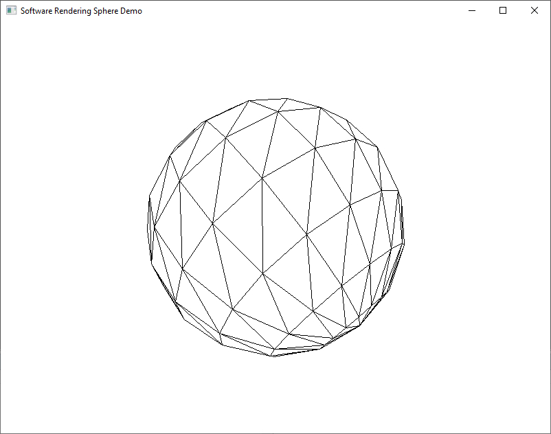

Загрузить архив с примерами ЗДЕСЬ.
Создание проволочной модели сферы загрузить можно /src/01.004-sphere_tri/1-Sphere.
Добавим вращение сферы - загрузить проект /src/01.004-sphere_tri/2-Sphere-Rotate.
Добавим задний буфер и добавим отбрасывание задних поверхностей- загрузить проект /src/01.004-sphere_tri/3-Sphere-Rotate-backbuff-backface.
